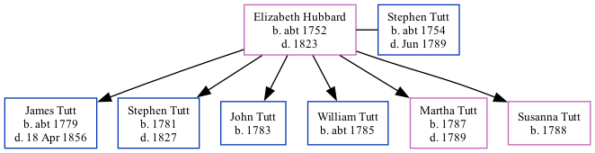

Elizabeth Tutt (née Hubbard) c1752 - 1823
[ Home ] | [ Calendar ] | [ Surnames Index ] | [ Family History ]Elizabeth Hubbard, the 4 times great-grandmother of Nigel Horne, was born c. 1752 and married Stephen Tutt (with whom she had 6 children: James, Stephen, John, William, Martha and Susanna) in Aldington, Kent, England on Aug 9, 17792.
She died in 1823 in Aldington1 and was buried there on Sep 28, 1823 (Age 71KFHS CD17)2,3.
Children
- James was born c. 1779
- Stephen was born in 1781
- John was born in 1783
- William was born c. 1785
- Martha was born in 1787
- Susanna was born in 1788
Citations
- East Kent Burial Index - Findmypast
- Familysearch.org (www.familysearch.org)
- England, Select Deaths and Burials, 1538-1991 Ancestry.com Operations, Inc.
Media
East Kent Burial Index - GBPRS/D/407116359/1
Family Tree

Map
Generated by ged2site. Last updated on Feb 28, 2025